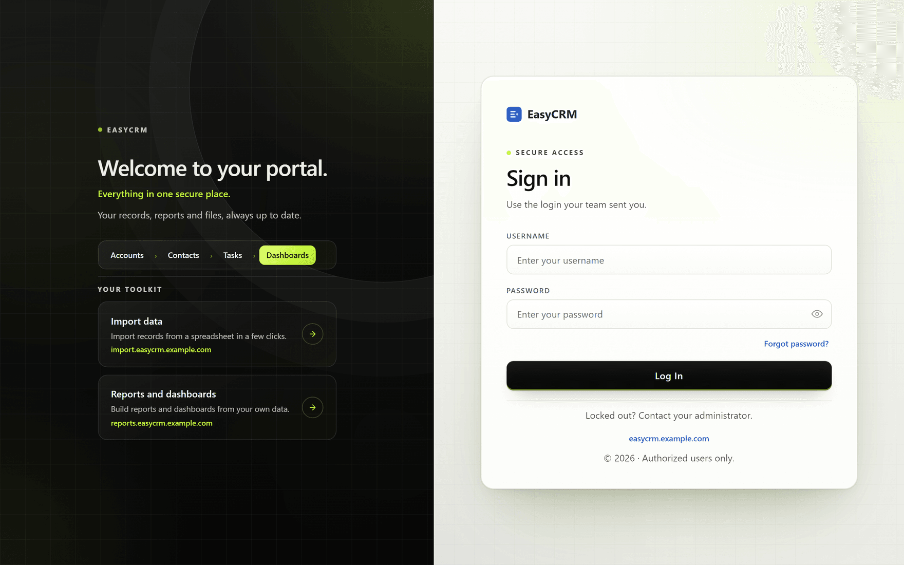
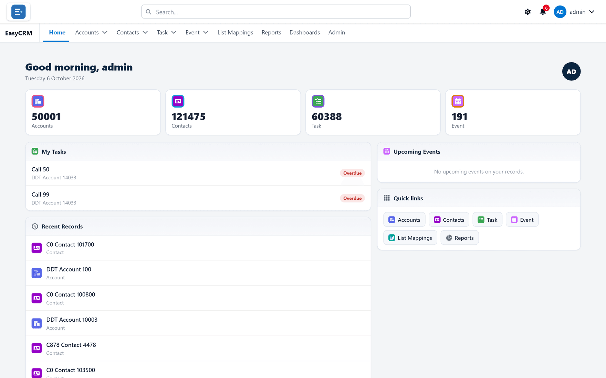
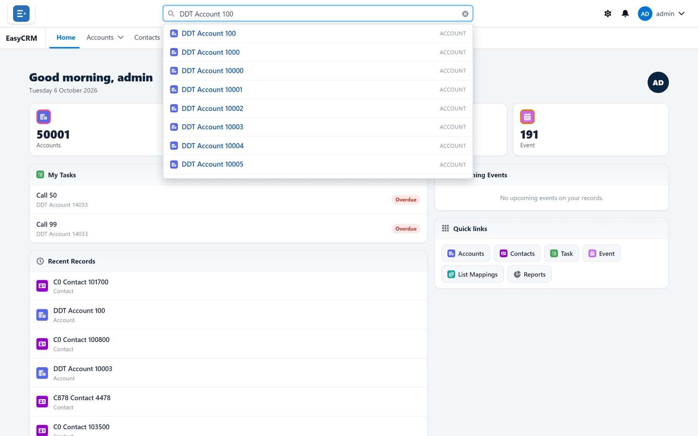
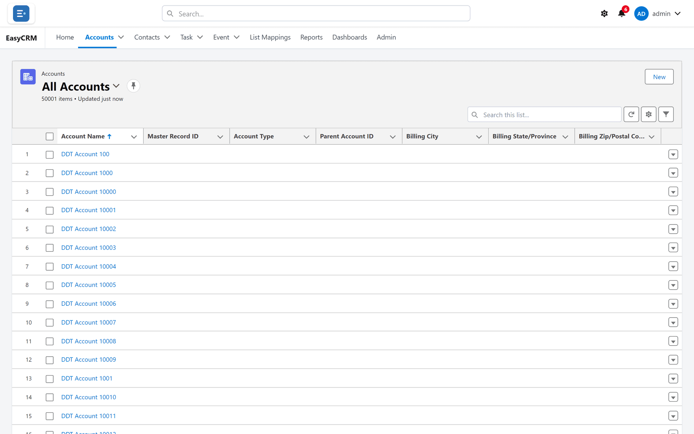
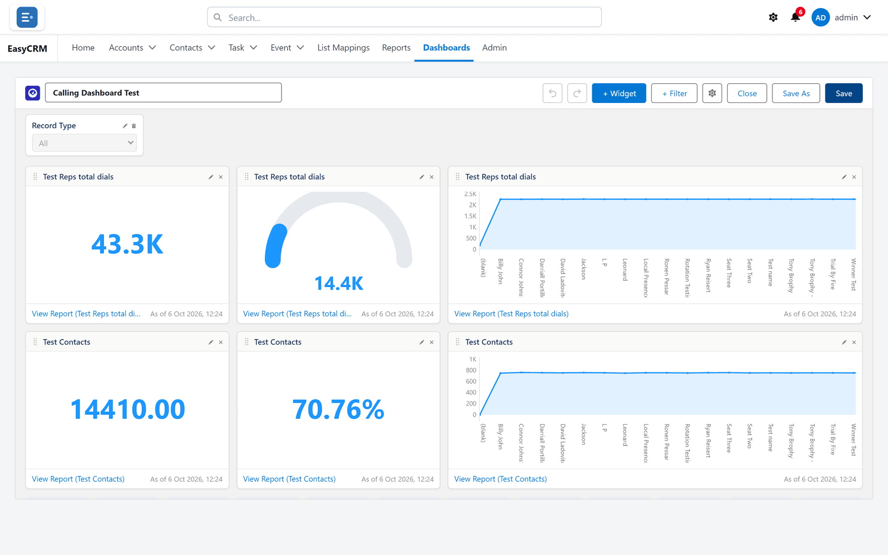
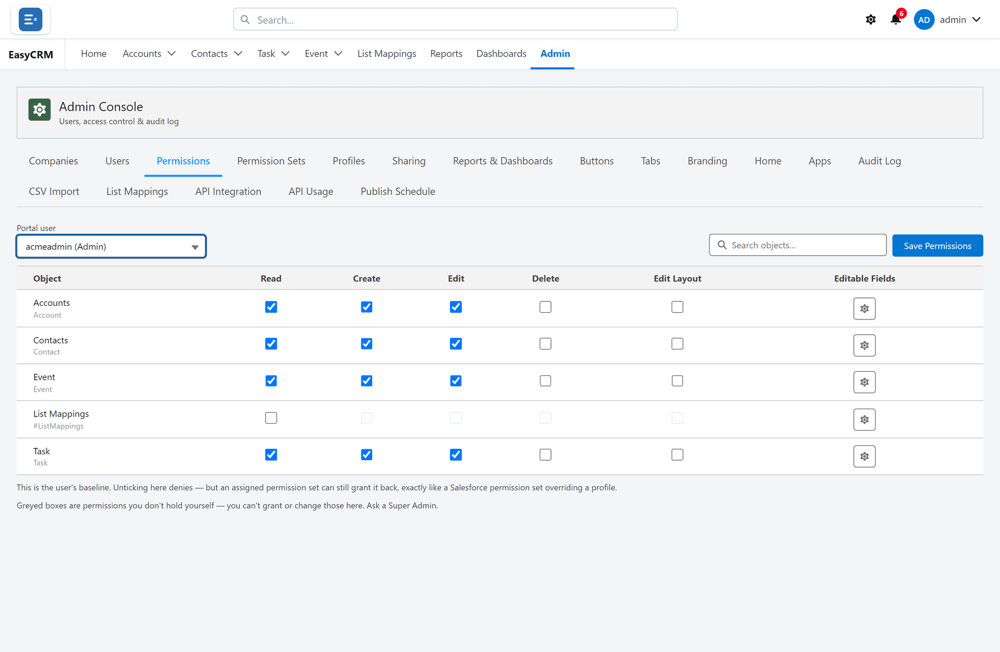

The complete guide
What EasyCRM is, what every part of it does, and why you would use it — written for people who do not work in Salesforce and do not want to.
A customer portal that your whole company can use, without buying a Salesforce licence for everybody.
EasyCRM is a website your company signs in to. It shows your customers, your contacts, your tasks and meetings, your reports and your files — all in one place. It runs in an ordinary web browser. There is nothing to install.
Underneath, the information lives in Salesforce. But the people using EasyCRM do not need Salesforce logins, do not see Salesforce, and do not need to know it is there.
Salesforce charges per person. For a company where twenty people need to look things up, but only three actually work inside Salesforce all day, that is expensive — and most of those twenty only ever need a fraction of what Salesforce does.
EasyCRM gives those twenty people a simpler screen showing exactly the part they need. The data is the same data. Change something in EasyCRM and it changes in Salesforce, and the other way round.
| Without EasyCRM | With EasyCRM |
|---|---|
| A licence for everybody who needs to look | Licences only for people who work in Salesforce |
| Everybody sees the whole of Salesforce | People see the records and fields you choose |
| Training people on a large product | A screen small enough to learn in ten minutes |
| Exports and spreadsheets going stale | Reports that read live data every time |
Everybody who signs in has one of three roles. The role decides what they can see and do.
| Role | What they can do | Typical |
|---|---|---|
| Standard | See and work on their own records. Run reports shared with them. Upload files. | Most people. |
| Admin | Everything a Standard user can, plus manage the people at their own company — add users, reset passwords, set what those people can see. | One or two per company. |
| Super Admin | Everything, for every company. Sets up companies, decides which console tabs the Admins get, controls sharing and branding. | Whoever runs the portal. |
Companies matter more than they look. Everybody belongs to a company. An Admin manages only their own company's people. Report folders are shared company by company. Apps are assigned company by company. Somebody with a blank company field matches no company rule at all — which is the single most common setup mistake, and it shows up as "they cannot see anything" or "their Admin cannot find them".
| Part | What it is for |
|---|---|
| Records | Accounts, contacts, tasks, events — the information itself. |
| Lists | Many records at once, filtered and sorted how you want. |
| Reports | Saved questions about your data, grouped and totalled. |
| Dashboards | Several charts and numbers on one screen. |
| Files | Documents, attached to records or standing alone. |
| Admin Console | Eighteen areas controlling users, access, appearance and integrations. |
| API | A read-only way for another system to fetch your data. |
Signing in, and what to do when it does not work.
Your administrator emails you a username and a password, plus the web address.

A message appears in red. Nearly always it is one of three things:
If no email arrives, check spam. Your administrator can also set a new password for you directly — they never see it either; it is emailed to you.
Click your name in the top right, then Log Out. Always do this on a shared computer.
The bar across the top is the same on every page. Learn it once and you can reach everything.

| Control | Where | What it does |
|---|---|---|
| Your logo | Far left | Takes you back to the home page. |
| Search | Middle | Finds any record by name, across every kind of record. |
| Gear | Right | Changes how the portal looks — to you only. |
| Bell | Right | Notifications. A red number means unread ones. |
| Your name | Far right | Settings, row spacing, and Log Out. |
Home, then one tab per kind of record, then Reports, Dashboards, and Admin if you are an administrator. The tab you are on is underlined.
Your tabs may not match somebody else's. An administrator chooses which tabs a company sees, and your role affects it too.
| Card | Shows |
|---|---|
| Number tiles | How many records of each kind you can see. Click one to open that list. |
| My Tasks | Your open tasks. Overdue ones marked in red. |
| Recent Records | What you opened lately — usually the fastest way back. |
| Upcoming Events | Meetings on records you work with. |
| Announcement | A message your administrator has written for everybody. |
| Quick links | Shortcuts to each tab. |
An administrator chooses which of these appear, and can give each app its own home page.
Click Search, type a few letters, and results appear underneath as you type, grouped by kind of record. This searches everything you are allowed to see, so it is the quickest way to find something when you are not sure which tab it is under.

Click the gear. You can put the menu across the top or down the left, and pick a colour theme. Under your name you can also set rows to Comfy or Compact.
All of this changes only what you see. Nobody else is affected and no data changes.
An app is a named group of tabs. If your company uses them, a grid symbol beside the logo lets you switch — Sales might show one set of tabs, Support another. If you only have one app, there is nothing to switch to and the control does not appear.
Records are the information itself. This is where most people spend their day.
Click a tab — Accounts, Contacts, Task, Event — and you get a table.

A tab holds several lists. Recently Viewed is only what you opened lately, so on a new account it is often empty — that is normal. Click the list name at the top to switch; All Accounts shows everything you are allowed to see. Click the pin to make a list your default.
The funnel button opens the filter panel. A filter is three parts: a field, an operator (equals, contains, greater than) and a value. Add as many as you like — by default a record must match them all.
Filter logic changes that. Each filter has a number, and you write a rule with them:
| Rule | Means |
|---|---|
| 1 AND 2 | Both must be true. The default. |
| 1 OR 2 | Either will do. |
| 1 AND (2 OR 3) | Filter 1, plus either 2 or 3. |
| 1 AND NOT 2 | Filter 1, but not filter 2. |
The gear button chooses which columns the list shows and in what order — your choice is remembered, and affects nobody else. Click a column heading to sort; click again to reverse. The arrow at the end of a row opens a short menu of things you can do to just that record.
| Part | What it holds |
|---|---|
| Information | The record's fields, grouped into sections you can fold away. |
| Activity panel | Calls, tasks, meetings and emails about this record. |
| Related records | Other records linked to this one — the contacts at this account, for instance. |
| Back to list | Returns where you came from. |
| Edit | Changes the fields. |
| Change Owner | Moves the record to somebody else. |
Blue text always does something. A record name opens that record. An email address starts an email. A phone number starts a call. A web address opens in a new tab.
Click Edit, change what you need, click Save. Or hover over one field, click the small pencil, and change just that.
There is no draft. When you click Save it is live for everybody who can see the record. There is no approval step and no undo.
If a field will not change, either the system calculates it, or you do not have permission to change it. If Save shows an error, it names the field — usually a required field left empty, or a date in the wrong format. Your other changes are not lost.
Click New on the list. Fill in the form — fields with a red line on the left are required. Click Save.
If the record comes in more than one kind, you are asked which first. The kind decides which fields you see, so a customer and a supplier can both be accounts without sharing one cluttered form. If you are not asked, there is only one kind available to you.
For more than a handful of records, use CSV Import instead — see part 8.
Change Owner moves a record to somebody else. This is not just a label: the owner usually decides who can see the record. Under Private sharing, the new owner gains access and the old owner may lose it.
If somebody says a record has "disappeared", a change of owner is the first thing to check.
The panel on the right of every record is where the history lives.
| Button | Use it for |
|---|---|
| Log a Call | A call that has already happened. |
| New Task | Something still to do, with a due date and an owner. |
| New Event | A meeting, with a start and an end time. |
| A message about this record. |
The Filters line narrows the timeline by date, type, or whether something is done. View All opens the whole history on its own page, and Expand All opens every entry so you can read the detail without clicking each one.
Tasks appear under My Tasks on the assignee's home page. Events appear under Upcoming Events. Adding them against the record — rather than from the Task tab — keeps them attached to the customer they concern, which is what makes the history useful later.
At the bottom of a record are tables of other records linked to it. Click any name to open it. An empty one says so — that means nothing is linked yet, not that something is broken. Which related lists appear is set by an administrator, under page layouts.
Documents, either standing alone or attached to the record they belong to.
| View | Shows |
|---|---|
| Recent | What you opened lately. |
| Owned by Me | Files you uploaded — the quickest way back to your own. |
| All Files | Everything you are allowed to see. |
Upload Files adds one from your computer. Click a file's name to preview it; the menu beside it downloads or deletes it.
Attaching a file to a record is usually better. It then sits with the customer it concerns, and access follows the record: anybody who can see the record can see the file, anybody who cannot, cannot.
Deleting removes the file for everybody, not just you, and there is no undo.
A report is a saved question about your data. It reads live data every time, so it is never out of date.
Click Reports. Folders are on the left, reports on the right. Click a report's name and it runs.
| Folder | Who sees what is in it |
|---|---|
| Recent | Not a real folder — just what you opened lately. |
| Favorites | Reports you starred. |
| Private Reports | Only you. |
| Other folders | Whoever the folder is shared with. |
While reading a report you can click Filters and change values. That changes only your view, only until you leave the page. Some filters are locked by whoever built the report and cannot be changed — that is how a report meant for one company stays limited to it. Refresh fetches the very latest numbers.
A new report starts by asking what it is about. The report type decides which records it can include and which fields are available.
| Type | Includes |
|---|---|
| Accounts | Accounts and account fields only. |
| Accounts with Contacts | Both — but only accounts that have at least one contact. |
| Accounts with or without Contacts | Every account, whether or not it has contacts. |
Choosing with when you meant with or without is the usual reason a report shows fewer records than expected. Use "with or without" when you are looking for the gaps — accounts nobody has a contact for.

| Part | What it is for |
|---|---|
| Outline | Columns and groups — the shape of the report. |
| Filters | Which records are included. |
| Preview | What it will look like, updating as you work. |
| Run | The full result rather than a preview. |
| Save / Save As | Keep it, or take a copy under a new name. |
| Undo / Redo | Step back and forward. Nothing is saved until you click Save. |
Save As is the safe way to experiment with somebody else's report: copy it, change the copy, leave theirs alone.
Grouping gathers rows that share a value. Totalling adds up a column, per group and overall. Together they turn a list into an answer.
| Shape | What it is | Use when |
|---|---|---|
| Tabular | A plain list, no groups | You want the records themselves. |
| Summary | Grouped down the side, with subtotals | You want totals per group. |
| Matrix | A grid, grouped down and across | The question has two dimensions. |
You do not pick the shape from a menu — it follows from what you group. No groups is tabular; row groups is summary; row and column groups is a matrix.
Column actions on a number column lets you total it: Sum, Average, Min or Max. You can pick more than one.
A bucket column is one you invent. You take an existing field and say "these values are Small, these are Medium, these are Large", and the report gains a column holding those names.
It lets you group and total by categories that matter to your business without anybody adding a field to the database. Picklists are sorted by dragging values into buckets; numbers by setting ranges; text by listing the values. Anything you do not place lands in Unbucketed Values — always worth a look, because a large one usually means values you did not expect.
There are two kinds, and the difference matters more than anything else about them.
| Kind | Calculates | Use for |
|---|---|---|
| Row-level | Once per record | Days between two dates; a value times a rate. |
| Summary | Once per group, from the totals | A percentage of a total; a conversion rate. |
The test: does the answer make sense for one record on its own? "How old is this?" — yes, so row-level. "What share of the month is this rep?" — no, so summary. Picking the wrong one gives a plausible but wrong number, which is worse than an error.
A formula returning 0.25 displays as 25%. Do not also multiply by 100.
A chart draws groups, so a report must be grouped before it can have one. Chart properties sets the type and what it measures.
| Type | Best for |
|---|---|
| Bar / Column | Comparing groups against each other. |
| Line | A value changing over time. |
| Pie / Donut | Parts of one whole — only with a few categories. |
| Gauge | Progress towards a target. |
If a report has several groupings you can choose which one the chart uses, so the same report answers two questions.
| Export kind | What you get |
|---|---|
| Formatted Report | What you see — groups, subtotals and headings kept. |
| Details Only | Just rows and columns. Better for sorting and pivoting. |
An exported file is an ordinary spreadsheet. None of your sharing rules or permissions apply to it any more. Anybody who receives the file sees everything in it.
Share gives another company Read or Edit on one report. Revoke takes it back. Sharing a single report does not share its folder — for a whole set, share the folder, and anything added later is included automatically.
Several charts and numbers on one screen, each reading from a report.

+ Widget adds one. Choose the report it reads from, then how it should look.
| Tile | Shows | Good for |
|---|---|---|
| Metric | One big number | A figure people watch daily. |
| Bar / Column | Groups side by side | Comparing. |
| Line | A value over time | Trends. |
| Pie / Donut | Parts of a whole | A few categories. |
| Gauge | Progress to a target | Targets. |
| Table | Rows from the report | Detail people need to read. |
If a number on a tile looks wrong, open its report. That is where the figure comes from; the tile is only drawing it.
A dashboard filter changes every tile at once — pick an owner or a region and the whole screen narrows together.
But each tile reads from a different report, and those reports do not always name things the same way. One might call it Owner, another Assigned To. Apply to Each Component is where you say which field on each report the filter matches. Fields with the same name are matched for you.
A tile you leave unmapped ignores the filter and keeps showing everything. Nine tiles narrow and one does not — which looks like a bug to whoever is reading the dashboard. This is the first place to check.
| View Dashboard As | What people see |
|---|---|
| The logged-in user | Each person sees their own numbers. |
| All data | Everybody sees the same totals, across every record. |
Getting this wrong is quiet. A rep set to "all data" sees the whole company's figures and has no reason to doubt them. A manager set to "the logged-in user" sees only their own and assumes the team is idle. Neither shows an error.
Grid size sets how finely tiles can be placed. Dashboard Theme and Widget Theme are separate, so light tiles can sit on a dark page — a common look for a wall screen.
Eighteen console tabs, plus three areas that live elsewhere. Only Admins and Super Admins see any of it.

The companies whose people use the portal. Create the company before adding its people, so you can set their company as you create them. People shows who belongs to one.
Do not delete a company that still has people. Their company field goes blank, and a blank company matches no rule — they stop seeing records, and their Admin stops being able to manage them. Move the people first.
Everybody who can sign in. Add somebody with + New User: username, email, role, company.
| Action | What it does |
|---|---|
| Active switch | Switches somebody off. Use this when people leave — never delete, which would break their records and the audit history. |
| Key symbol | Emails them a new password. You never see it. |
| Person symbol | Shows you the portal exactly as they see it. |
| Assign Apps | Which apps the company may use. |
| Assign Record Types | Which kinds of record they may create. |
| Console Tabs | Which Admin Console tabs their Admins see. |
Logging in as somebody is for reproducing a problem they have reported. Every attempt is written to the Audit Log, allowed or refused, and anything done during that session records both names. The person is not signed out and does not notice. A Super Admin can do it for anyone; an Admin for the Standard users they manage and for Admins at their own company, never for a Super Admin. It is switched off until a Super Admin turns it on.
Leaving an assignment list blank usually means "all", not "none".
What one person may do with each kind of record. This is set per user, not per role, and the page is blank until you choose somebody.

| Column | Lets them |
|---|---|
| Read | See the records. |
| Create | Add new ones. |
| Edit | Change existing ones. |
| Delete | Remove them permanently. |
| Edit Layout | Change the record page for everybody, not just themselves. |
| Editable Fields | Field-by-field control over what they may change. |
Unticking is a baseline, not a lock. If somebody also has a permission set granting something, the permission set wins. If you untick something and it still works, look for a permission set.
Greyed boxes are access you do not hold yourself. You cannot grant what you do not have — ask a Super Admin.
Be careful with Delete. It is permanent and most people never need it.
| Use | When |
|---|---|
| Profile | Everybody doing this job needs it. The baseline for a kind of person. |
| Permission set | A few people need extra. It only ever adds. |
| Permissions directly | One person, one object, one time. |
Name profiles after the job ("Sales rep") and permission sets after what they grant ("Can delete contacts") — those are what you are looking for when assigning them.
Sharing decides which records somebody sees. Permissions decide what they may do to them. Six areas sit behind this one tab.
| Setting | Means |
|---|---|
| Private | You see only records you own. |
| Public Read Only | Everybody sees them; only the owner changes them. |
| Public Read/Write | Everybody sees and changes them. |
Start Private and open it up. It is far easier than working out later who should never have had access. Grant via Hierarchy lets managers see what their team sees — leave it on unless you have a reason not to.
A standing rule that opens access beyond the default, and keeps applying to new records. Records can be chosen by owner ("everything the support team owns") or by criteria ("every account in the North region"). Criteria rules keep working when people change jobs. Set a rule Inactive rather than deleting it while you investigate.
A public group is a named list of people, used by rules so you add somebody once rather than editing every rule. Name it for who is in it ("Support Team"), not what it currently does.
Roles are a tree of who reports to whom. Access flows upwards only — a manager sees what their people see, not the other way round. A role says whose records you can see; a profile says what you may do with them. The two are deliberately separate.
Everything else only ever adds. A restriction rule narrows, and from the user's side it looks exactly like data loss. Test with one person, tell people first, and check with Record Access afterwards.
Pick a record and it lists everybody who can see it and why: Owner, Org-Wide Default, Sharing Rule, or Hierarchy. This is how you turn "I cannot see this" into an answer in ten seconds — and the reason tells you exactly what to change.
Which companies can see which report folders, with Read or Edit. Current access shows who has what now. Sharing a folder covers everything in it, including anything added later — less work, and less likely to be forgotten.
| Tab | Controls |
|---|---|
| Branding | Five panels — name and logo, colour theme, navigation default, the sign-in page, and the sign-in designer — all saved with one Save All Branding. |
| Tabs | Which tabs appear and in what order. Two list boxes and Save Tabs. |
| Home | Which home-page cards appear. Two list boxes and Save Home. Each app can have its own. |
| Apps | Named groups of tabs, with New App. |
| Buttons | Your own buttons on record pages, with New Button — usually to open another system with the record loaded. |
Hiding a tab hides the way in, not the data. People can still reach those records by search or report. Use permissions and sharing for access.
Reached from a record, not the console: open any record and click Edit Page Layout. You choose which fields appear, group them into sections, and decide which related lists show underneath. The New Record Window is set separately — keep it short.
Removing a field from a layout never deletes data; the value stays on the record and is simply not displayed. Reset to Default loses your arrangement but touches no data.
What you change here applies to everybody who sees that kind of record.
Build the sign-in page out of blocks — headings, text, logos, links, separators, spacers. Three states keep it safe: Save draft (only you), Live preview (as you work), and Publish (everybody). Restore puts back an earlier version. Check both Desktop and Phone before publishing.
The username box, the password box and the Log In button cannot be moved, hidden or imitated by anything you add. That is deliberate: no design change can turn the sign-in page into something that collects passwords and sends them elsewhere.
| Tab | What it does |
|---|---|
| CSV Import | Loads many records from a spreadsheet. Field names in the first row; save as CSV; match columns; import. |
| List Mappings | Standing column-to-field matching for lists that arrive repeatedly from the same source. Choose a company first. |
| Publish Schedule | Copies portal reports into Salesforce on a timetable. Off until somebody turns it on. |
Import ten rows before you import ten thousand. If the ten land correctly, import the rest. Import adds records — it does not match and update, so importing the same file twice gives two copies of everything.
If a scheduled report is deleted, its schedule pauses rather than silently re-creating the report somebody deliberately removed.
Who did what, and when: sign-ins, failed sign-ins, password changes, administration changes, and every "log in as" attempt. It cannot be edited, deleted or switched off by anybody, including a Super Admin. That is the point of it.
Both live in Salesforce, not the portal. The Setup Assistant checks what the portal itself is allowed to do — permissions on its own user, field access, whether the site is active, whether email can be delivered. Run it after installing and after adding new fields, which do not get access automatically.
Licence limits cap how many companies and users an installation may have. Reaching a limit refuses new users with a message; nobody already created is affected.
The one mental model worth holding. Nearly every "why can't they see it?" question comes down to this.
| Question | Answered by |
|---|---|
| Which records can they see? | Sharing — defaults, rules, groups, hierarchy. |
| What may they do with them? | Permissions — read, create, edit, delete. |
Somebody needs both. Read permission with no sharing shows an empty list. Sharing with no read permission shows nothing at all. They look identical to the user and have completely different fixes.
| Symptom | Look at |
|---|---|
| Nobody can sign in | Setup Assistant, and whether the site is active. |
| One person cannot sign in | Their Active switch in Users. |
| They are in, but a tab is missing | Tabs, Apps, or their role. |
| The tab opens but the list is empty | Sharing. Use Record Access. |
| They can see it listed but cannot open it | Permissions — Read on that object. |
| They can open it but cannot change it | Permissions — Edit, or Editable Fields. |
| A record "disappeared" | Its owner changed, or a restriction rule was added. |
| Cannot add a user, permissions look right | Licence limits. |
| A new field is not visible | Setup Assistant — field access is not automatic. |
An API key lets another system fetch your portal data automatically.
Under API Integration you create a key, attach it to a person, and choose exactly which records and fields it may read. The other system uses the key; no human signs in.
Keys can only read. Nothing can be changed or deleted through them. The worst a leaked key can do is show somebody data — not alter it.
The Secret is shown once, when the key is created. Copy it then. If it is lost you cannot look it up — you must Regenerate, which issues a new secret and stops the old one working immediately.
| Action | When |
|---|---|
| Edit | Change which records and fields the key may read. |
| Regenerate | The secret may have been seen by the wrong person. |
| Revoke | The other system is being retired. |
Attach a key to somebody with only the access the other system needs — a key on a Super Admin can read everything. API Usage shows how much each key is used, by company and by user, so you can spot a key nobody needs any more or one that has started looping.
The words this guide uses, in plain terms.
| Word | Means |
|---|---|
| Record | One thing — an account, a contact, a task, a meeting. |
| Object | A kind of record. "Account" is an object; "Acme Ltd" is a record. |
| Field | One piece of information on a record, such as Billing City. |
| List view | A saved set of records with chosen columns, filters and sorting. |
| Owner | The person a record belongs to. Usually decides who can see it. |
| Role | Where somebody sits in the management tree. Decides whose records they see. |
| Profile | The baseline access for a kind of person. |
| Permission set | Extra access given to particular people. Only ever adds. |
| Public group | A named list of people, used by sharing rules. |
| Org-wide default | The starting access for a kind of record, before any rule. |
| Sharing rule | A standing rule that widens access. |
| Restriction rule | A rule that narrows access. The only one that does. |
| Report type | What a report is about. Fixed when the report is created. |
| Grouping | Gathering rows that share a value, with a subtotal on each. |
| Bucket column | A column you invent, sorting values into groups you name. |
| Row-level formula | A calculation done once per record. |
| Summary formula | A calculation done once per group, from the totals. |
| Matrix | A report grouped down the side and across the top. |
| Widget / tile | One chart or number on a dashboard, reading from one report. |
| Page layout | Which fields and related lists a record page shows, for everybody. |
| App | A named group of tabs people can switch between. |
| API key | A read-only credential letting another system fetch data. |